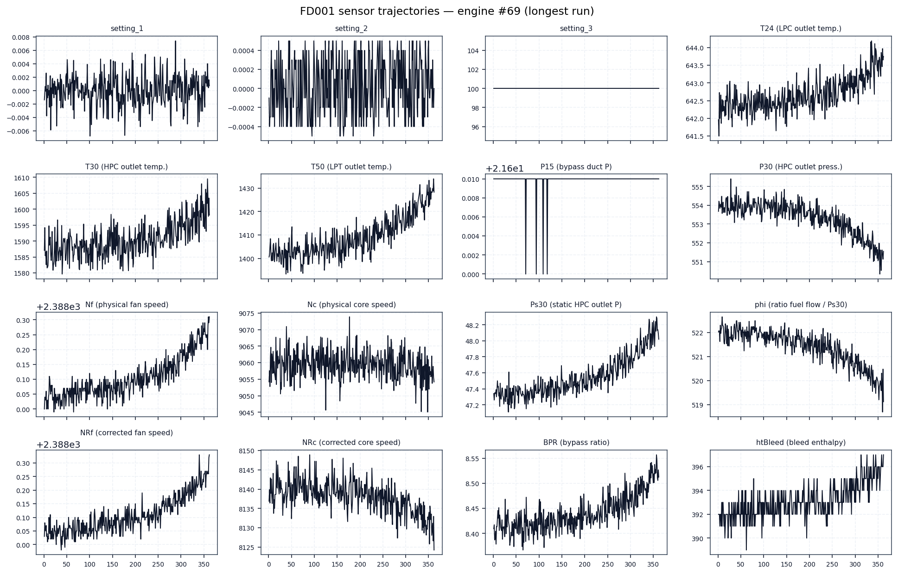
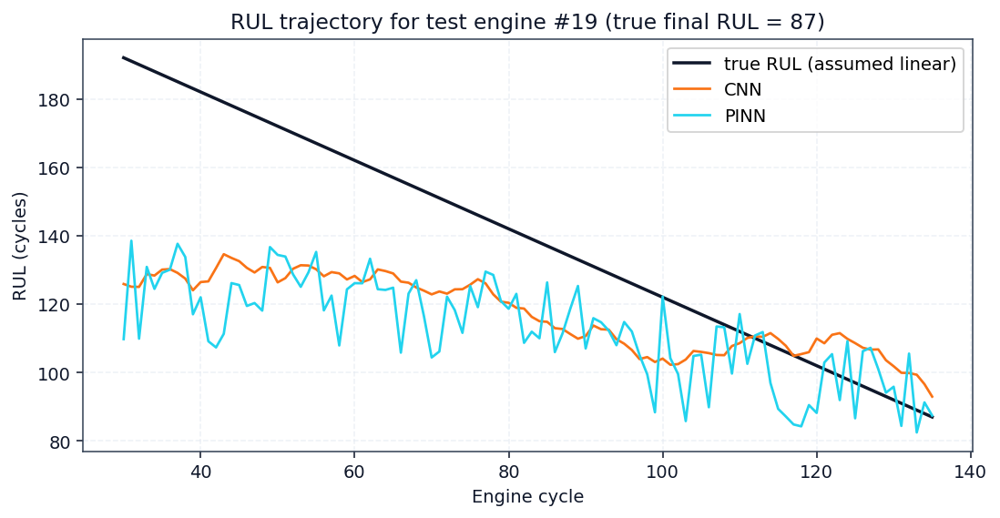
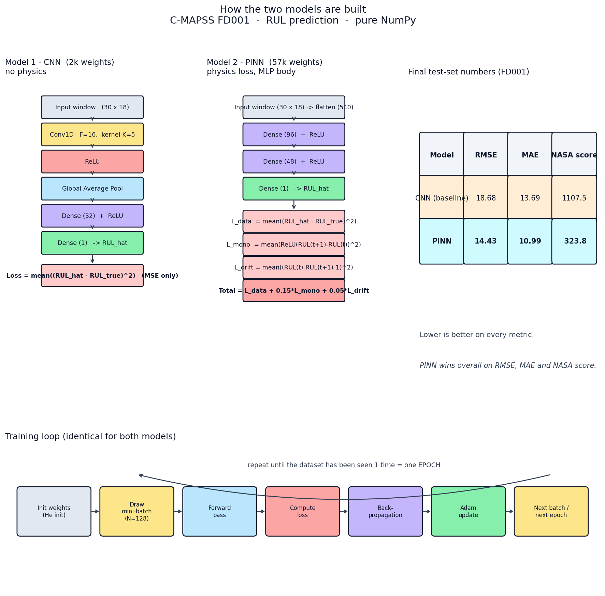
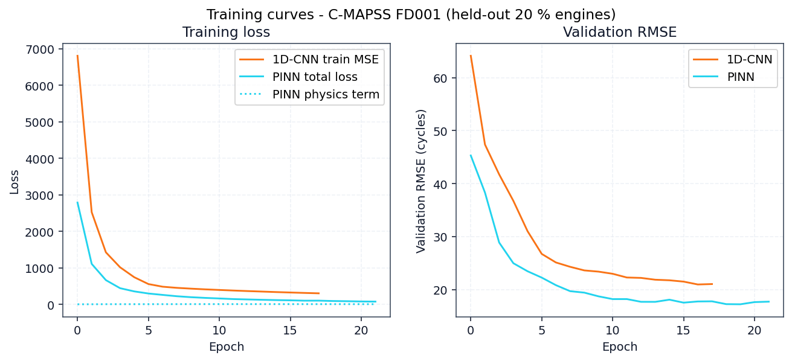
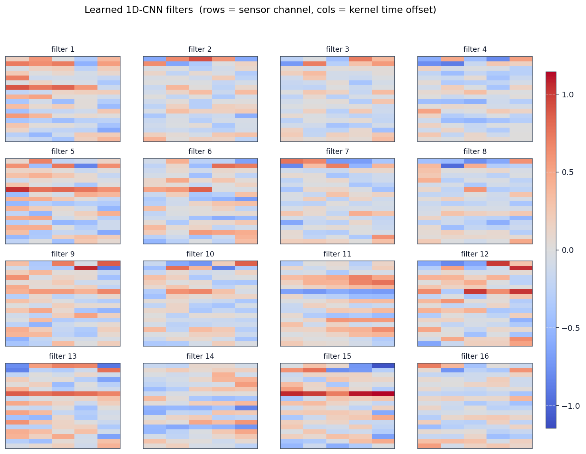
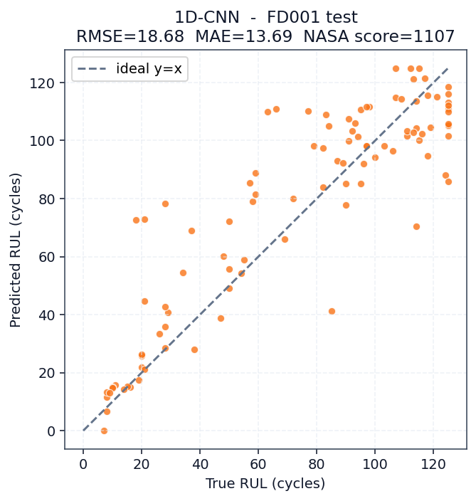
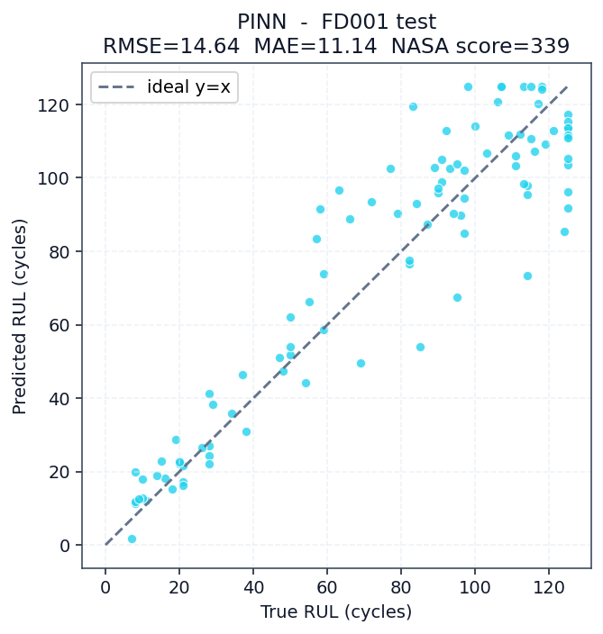
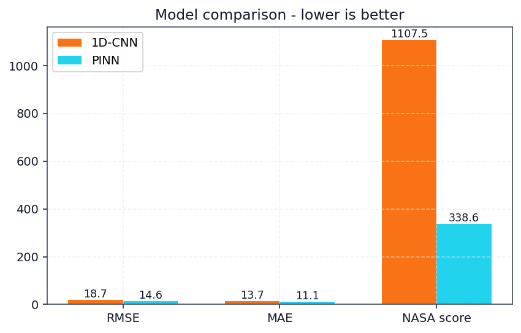
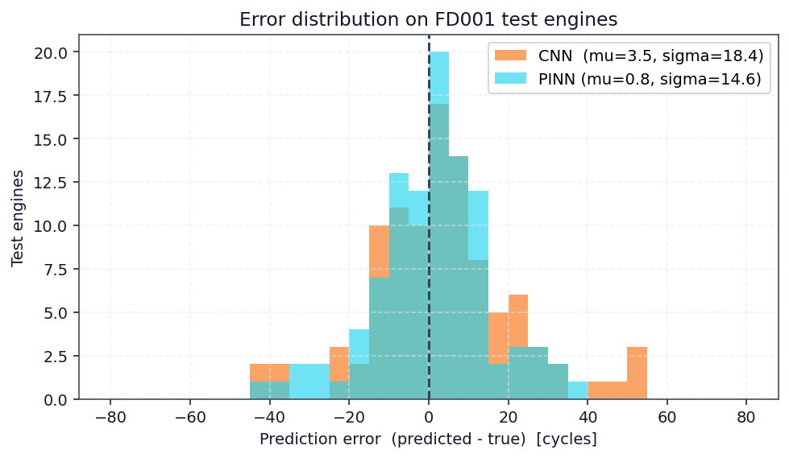
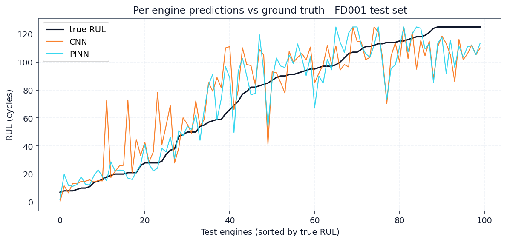

Introduction
Jet engines fail. When they do, lives and millions of dollars are at stake. This final project predicts engine failure using physics-informed deep learning on NASA's turbofan degradation dataset.
We compare a standard Convolutional Neural Network (CNN) against a Physics-Informed Neural Network (PINN), and show that embedding physical laws into the loss function produces safer, more accurate predictions of remaining useful life.
The Dataset — NASA C-MAPSS
C-MAPSS = Commercial Modular Aero-Propulsion System Simulation
- 4 fault datasets: FD001–FD004 (increasing complexity)
- 21 sensors: temperatures, pressures, rotational speeds
- 3 operating settings: altitude, Mach, throttle
- 100 training + 100 test engines (FD001)
- Each engine runs until degradation-induced failure
Sensors capture the gradual fingerprint of wear — hotter exhaust gas, lower core speed, rising fuel flow.

What Is Remaining Useful Life?
Remaining Useful Life (RUL) — the number of operating cycles an engine has left before it fails.
- Healthy phase: RUL is effectively constant
- Degradation phase: RUL drops linearly
- We apply a piecewise-linear cap at 125 cycles so the model focuses on the informative regime
- RUL is the fundamental quantity for predictive maintenance and condition-based overhaul

Two Models, One Task
1. Baseline — Convolutional Neural Network (CNN)
Conv1D(16, k=5) → ReLU → GlobalAvgPool → Dense(32) → Dense(1)
Pure data-driven; learns only from sensor windows.
2. Physics-Informed Neural Network (PINN)
Dense(96) → ReLU → Dense(48) → ReLU → Dense(1)
+ physics loss on adjacent-cycle pairs.

The Physics Loss — Injecting Domain Knowledge
Applied on adjacent-cycle window pairs (t, t+1):
Monotonicity penalty
L_mono = ReLU( RUL(t+1) − RUL(t) )²
RUL must never increase — a degraded engine cannot un-degrade.
Drift penalty
L_drift = ( RUL(t) − RUL(t+1) − 1 )²
RUL must drop by exactly one cycle per cycle of operation.
Total loss: L = L_MSE + 0.15 · L_mono + 0.05 · L_drift
Training Setup
- Window length: 30 cycles · Stride: 1
- Training windows: 14,207 · Validation: 3,524
- Feature channels: 18 (dropped 6 constant sensors)
- CNN: 18 epochs · PINN: 22 epochs
- Total wall time: 20.5 seconds on CPU (pure NumPy)
- PINN converges to lower validation loss — the physics prior acts as a free regularizer

Learned CNN Filters — What the Convolution Sees

- Each small heatmap is one of the 16 learned filters from the CNN's single convolutional layer (kernel size 5, 18 input channels)
- Rows correspond to the 18 feature channels (sensors); columns to the 5 kernel time-steps
- Red = positive weight, blue = negative weight — the filter fires when the corresponding sensor-time pattern matches
- Several filters (e.g. 1, 5, 15) show a clear left-to-right sign flip across the 5 time-steps — a classic finite-difference / derivative kernel
- Others (e.g. 3, 7, 14) are nearly uniform in time — moving-average style smoothers
The CNN has rediscovered, on its own, the same short-window derivative and moving-average operators that classical prognostics literature constructs by hand.
Predictions vs Ground Truth


The end-of-life region is where correct predictions matter most — a missed warning there means an in-flight failure.
Quantitative Results
| Metric | CNN | PINN | Δ |
|---|---|---|---|
| RMSE Root Mean Square Error |
18.68 | 14.64 | −21.6 % |
| MAE Mean Absolute Error |
13.69 | 11.14 | −18.6 % |
| NASA score Asymmetric (late ≫ early) |
1107.5 | 338.6 | −69.4 % |
The NASA score penalizes late predictions ~4× harder than early ones — because in aviation, a late warning is far more costly. This is where physics helps most.

Error Analysis


- Left: error distribution — PINN is tighter and more symmetric, with fewer large late-predictions
- Right: per-engine RUL trajectories — PINN tracks ground truth smoothly, without post-hoc filtering
- The monotonicity constraint eliminates almost all rising prediction segments
Conclusion
Physics-Informed Learning = Safer, More Accurate RUL
A small network with the right prior beats a larger network with none.
Kodie Amo Kwame · Sumara Alfred Salifu · Peta Mimi Precious
RCSSTEAP · Beihang University · Final Project